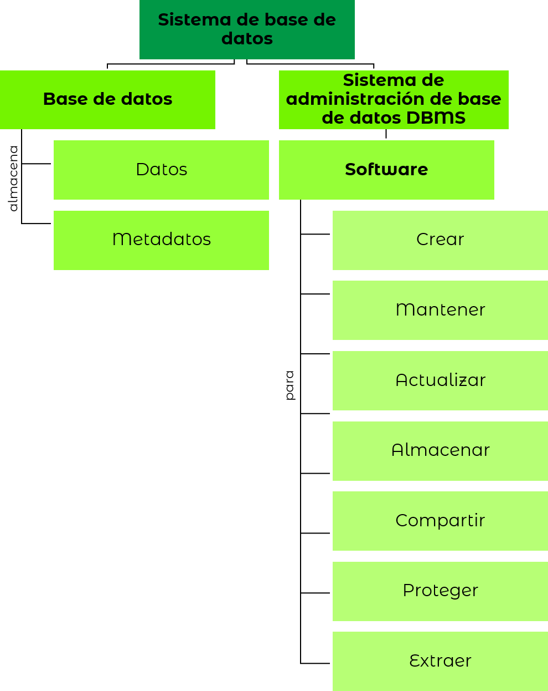
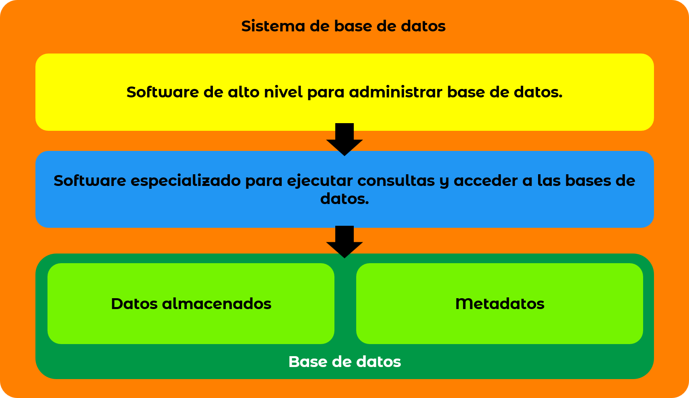

Las bases de datos (BD) han venido evolucionando a través de los años y se perfeccionaron gracias a los esfuerzos humanos para administrar eficientemente los grandes volúmenes de información provenientes del desarrollo tecnológico de los siglos XX y XXI. Este desarrollo incluye el paso por estructuras de datos jerárquicas y en forma de árbol, cintas magnéticas, sistemas de ficheros, discos fijos y otras tecnologías que culminaron en la creación de las bases de datos relacionales y todos los otros tipos de BD existentes.
Con esto claro, es posible proseguir con los conceptos básicos de las BD de acuerdo con Elmasri y Navathe (2007).
- Dato:
- unidad mínima de información con significado implícito que puede ser de distinta naturaleza como texto, número, booleano, fecha, hora entre otros sin procesar.
- Información:
- procesamiento del dato, usualmente con software, para darle sentido.
- Base de datos:
- conjunto de datos relacionados e integrados lógicamente que tienen un propósito específico.
- Metadato:
- datos sobre la estructura de los datos de la BD.
- Sistema de administración de base de datos (DBMS):
- conjunto de software para crear, mantener, actualizar, almacenar, compartir, proteger y extraer información de las bases de datos. Pueden ser corporativos para el procesamiento de gran cantidad de información o ofimáticos para BD que requieren menos recursos.
- Sistema de base de datos:
- unión de DBMS y BD con un propósito.

Elaboración propia a partir de Elmasri y Navathe (2007)
Así, a grandes rasgos el ecosistema de un sistema de base de datos puede comprenderse como la unión de distintas capas que permiten el funcionamiento y administración de las BD con: 1. programas de alto nivel para que los usuarios puedan realizar consultas y administrar las BD fácilmente; 2. Software especializado para ejecutar consultas y acceder a las bases de datos; 3. BD compuestas por los datos puros y sus metadatos.

Adaptación propia a partir de Rob y Morris (2011)
Finalmente, de acuerdo con Coronel, Rob y Morris (2011) las BD pueden ser clasificadas con base en múltiples características como: número de usuarios, ubicación, tipo de uso y tipo de datos almacenados. A continuación, se hace una pequeña descripción de esta categorización:
- Número de usuarios: puede haber de un solo usuario que soporta un único usuario operando transacciones. Base de datos de usuarios múltiples en la que varios usuarios pueden efectuar operaciones al tiempo.
- Ubicación: centralizada cuando se almacenan los datos de un solo lugar y base de datos distribuida cuando trata con datos de distintos lugares.
- Tipos de uso: si soporta operaciones del día a día empresarial se conoce como base de datos operacional, de transacciones o de producción. En contraste, si solo almacena datos para apoyar procesos decisivos se conoce como almacén de datos.
- Tipos de datos: si emplea datos que no se han refinado, ejemplo: imágenes, es una BD de datos no estructurados. Si los datos han sido transformados en una estructura bien definida es una BD con datos estructurados. Finalmente, si los datos se han procesado moderadamente se denomina BD de datos semiestructurados.